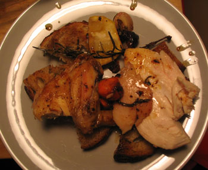

Roast chicken with croutons
Last night I made an herbed roast chicken that I served atop large croutons of crusty sourdough bread (to collect the juices).

The flavor was good, but it may have been a tad on the salty side because of the brine. I think I was a little heavy-handed with the Morton’s Coarse Kosher.
I’m still having trouble carving birds, and trussing them. Mom: do you tie your chickens? Jacques is always saying that you have to, but I find it exceedingly difficult. I need a tutorial. It’s like learning how to tie my shoes all over again.
Anyway, a whole chicken only costs $3 at Western Beef, so for now I can just keep practicing and see what works. It’s not like I’m practicing on a crown roast of pork.
Comments
No, I don’t tie them; I think that’s counterproductive and makes the dark meat take longer to cook. Did you brine it for too long? I love salty food so it would have probably have been just right for me!
I don’t bother with brining since I get the Amish chickens at McGinnis Sisters and the flavor is so good; I think the brining would destroy it. I do make a sort of paste with olive oil, lemon juice, kosher salt, smoked paprika, and herbs, and rub it all over the bird before roasting. I leave the carving to Billy as I think it’s a manly art.
Mommy
I found a recipe online that told me to brine for 24 hours, and I brined for about 20. I can’t afford your fancy Amish chickens, but I will try your rub. Smoky Hungarian paprika from the Grand Central Market, right?
I only buy chicken when it’s on sale, about $139/lb. I just checked Cook’s Illustrated and it’s as I thought, they recommend NOT trussing, and only brining for about 1 hour. I’m not surprised your chicken was salty, and probably waterlogged, too.
Yes, Adrianna’s Spice Caravan; get the bittersweet, the hot is too hot except in small doses. You want a big spoonful in the rub.
Great advice! Thanks!
Friends, my mother is here for all us.
My favourite dish … it sounds wonderful!
Add a comment